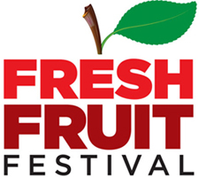

FRESH FRUIT FESTIVAL
showtimes & tickets:
July 10-23
SPECIAL ENCORE PERFORMANCE SUNDAY, JULY 23 AT 7:30PM
Village Orpheus
By Mickey Bolmer
Produced by Poetic Theater Productions
Village Orpheus celebrates the vivacity, emerging sexual liberation and boldness of Greenwich Village in the 1950s and 60s. Focusing on Frank O’Hara’s central role in the artistic community, this neoclassical fantasy explores the parallels between the myth of Orpheus and O’Hara’s journey with his lover Joe LeSueur, as a chorus of New York bohemians sing art and the Village back to life and love.
Musicals:
La Maupin
book: Jessica Field; music: Jared Field
Tuesday 7/18, 6:30pm; Friday 7/21, 6:30pm; Saturday 7/22, 2pm
Julie d’Aubigny. Swordswoman. Opera Singer. Bisexual badass. In La Maupin this legendary 17th-century heroine lives again, in a fast-paced musical adventure. At her peak, Julie was a force to be reckoned with – bashing bigots, tumbling chambermaids, and performing some of Opera’s most iconic roles. Accounts vary; was she a lunatic or a martyr? A hero or a cautionary tale? Only one fact goes undisputed about Julie: She is a legend.
featuring Fight Direction by Jared Kirby!
wRETCH: the Final Concert
“fierce body tour”
Featuring Pandora Scooter, and her Band “wRETCH”
Wednesday 7/12, 9pm; Friday 7/14, 9pm; Saturday 7/15, 9pm
Pan is a queer punk-rock diva, and this is her last concert! Or is it? Her band can’t tell . . . this suicide talk’s not serious, is it? While they try to figure it out, wRETCH plays their set of riot grrrl-style proclamations on drugs, lesbianism, eating disorders, and taking up space. Get ready to smash the patriarchy, and maybe a guitar or two, at this bombastic all-woman rock extravaganza.
Full Length Plays:
All Mixed Up
by John J. Enright
Friday 7/14, 5:30pm; Saturday 7/15, 4:30pm; Sunday 7/16, 8pm
This modern comedy explores the challenge of maintaining love and trust in an era of nontraditional relationships. Beth and Carrie, an interracial couple on the brink of parenthood, had agreed to have a mixed-race baby – i.e. using a white sperm donor. But days before the very pregnant Beth is due, she reveals she secretly found a black donor. When their fight is interrupted by the donor himself, hijinks ensue. The situation is all mixed up! (Even if the baby isn’t.)
Custody
by Patrick McCarthy
Monday 7/10, 8pm; Thursday 7/13, 7pm; Sunday 7/16, 4pm
A new play by award-winning playwright Patrick Thomas McCarthy (Fresh Fruit Festival Outstanding Playwright 2012 & 2013).
Three men pursue one woman – and each other – for CUSTODY of their children, memories, and photo albums. Featuring the issues and fashions of the early 90s, including straight women who love gay men, and the straight men who love them – and try to be more like gay men to get women to love them back.
In an effort to provide something for everyone, CUSTODY even includes America’s only child with Dutch Elm Disease.
The Diplomats
by Nelson Diaz-Marcano
Wednesday 7/12, 7pm; Saturday 7/15, 2:30pm; Sunday 7/16, 6pm
Two days before election night 2016, close friends Annie and Carlos are having a reunion on his first visit back in New York. At first it seems their relationship hasn’t changed– that is until Carlos brings an unexpected guest: Annie’s estranged clickbait-writing friend Gary. This is the story of three friends, two candidates, and one chicken . . . and what happens next will blow your mind!
Fistful Of Cake, Pocketful Of Miracles
by Larry Phillips
Tuesday 7/11, 9pm; Thursday 7/13, 9pm; Sunday 7/16, 2pm
Why WATCH a romantic comedy when you can LIVE one?
Nathan hasn’t shown up for work in weeks. Fearing the worst, his office sends Evan to check in on him. Evan finds a sad and depressed Nathan whose been hiding a massive break-up from everyone. Determined to get Nathan out of his funk, Evan decides to make him his new pet project and introduce him to the modern Gay Dating World.
The Phillie Trilogy
by Doug DeVita
Wednesday 7/19, 6:30pm; Saturday 7/22, 4:30pm; Sunday 7/23, 3:30pm
Growing up gay in the “fabulous” 70s was no picnic for the precocious Phillie McDougal. Through nuns, priests, bullying classmates, parents – and years later the realization his best friend may not be the person he thought she was – he lived to tell the tales, with results no one bargained for. Including him.
Strings
by Charles Curtis
Monday 7/17, 7pm; Tuesday 7/18, 9pm; Thursday 7/20, 8:30pm
Inspired by the death of Trayvon Martin and countless other black men, STRINGS follows one man’s road to execution, and hopefully, another’s toward redemption. As Man awaits his impending hearing and execution for cleaning up his neighborhood, the only person that seems to want Man to live is his brand new lawyer, Derek. While Derek prepares to defend a man he just met, they each find that some things are inescapable and no one is truly innocent.
Short Play Collections:
THE HISTORY OF LOVE: Short Plays with a Historical Bent
Damn Fool – by W. Tré Davis
Part of THE HISTORY of LOVE: An Evening of Short Plays
Tuesday 7/11, 7pm; Friday 7/14, 7:30pm
In a southern jail cell in 1944, two women wait for dawn. Anna is the sheriff’s daughter; Hattie is the editor of a radical black newspaper—and Anna’s lover. Their relationship’s strength and honesty are tested as they talk through their night of captivity, and the morning brings the biggest test they’ll face. Who will emerge with their identity intact? Produced by FIG Productions.
Village Orpheus – by Mickey Bolmer
Produced by Poetic Theatre Productions
Part of THE HISTORY of LOVE: An Evening of Short Plays
Tuesday 7/11, 7pm; Friday 7/14, 7:30pm
Greenwich Village has long been a hotbed of artistic daring and sexual exultation; few embody both as fiercely as Frank O’Hara, whose poetry lit up the neighborhood throughout the 40s, 50s, and 60s. In this neoclassical fantasy, O’Hara takes on the role of Orpheus, as he, his lover Joe, and a chorus of New York bohemians sing the Village back to life and love. Produced by Poetic Theater Productions
AFTER HOURS: An Evening of NSFW Short Plays
Blood Orange – by Marcus Scott
Part of AFTER HOURS: An Evening of Short Plays
Friday 7/21 9pm; Saturday 7/22, 9pm
Before he heads off to college Dorian, an African-American high school senior, wants to confront (and perhaps make amends with) his first love Vladimir. But Vladimir has plans of his own to get him back and they involve beefcake lothario Tanner. Blood Orange explores the fetishization of black male bodies, gay stereotypes, hook-up culture, interracial gay relationships, power play and upward mobility—all in 10 minutes overlooking the hills of San Francisco.
21st Century Faggot – by Shelton Lindsay
Part of AFTER HOURS: An Evening of Short Plays
Friday 7/21 9pm; Saturday 7/22, 9pm
Follow writer/performer Shelton Lindsay (NY Neo-Futurists, Pickle Day) as he explores sex, gender, and desire—and his life as a self-proclaimed “faggot.” From first break-ups to bathouse orgies, Shelton pinpoints singular moments in his experiences as a gay man, and throws in a heaping dose of music, dance, and raucous humor to create the ultimate post-modern queer variety show.
Kill Your Lovers – by Anais West, with video by Shauna Griffin
Part of AFTER HOURS: An Evening of Short Plays
Friday 7/21 9pm; Saturday 7/22, 9pm
An aspiring camera operator finds herself on set for an indie fem-dom porno, starring and directed by bisexual “entreporneur” Gillian De Rey. Her co-star is Charlie, a pornstar facing disturbing allegations on social media. As they begin shooting, the audience and the camera operator become voyeurs in a morally ambiguous act of sexual violence. Kill Your Lovers is a video/play hybrid exploring the queer female gaze and the ethics of what turns us on.
HIGHLIGHTS: The Short Plays Contest!
Sunday 7/23, 2pm
The Audience and Judges have spoken!
The most outstanding from a two day contest of (very) short LGBT (and rather Q) plays:
THE WHOLE by Conlan Carter
AT SEA by Carolyn Gage
A GAY THING by Joshua James
A SEMICOLON IS A DOUBLE by Larry Rinkel
BOIL, EXPLODE, REPEAT? by Rob Romero
DOUBLE RAINBOW by Marcus Scott
Cabarets & Concerts:
Do You Dream In Spanish?
Featuring Roberto Araujo and his Trio
Monday 7/17, 9pm
Roberto Araujo is a photographer, singer, gay man, actor, New Yorker, dancer, and Immigrant. But the one question he hears more than anything is, “Do you dream in Spanish?” Come along with him as he takes you on a unique journey through his life, with music, dancing, and photography!
Under The ‘C’
Cacophony Daniels sings Howard Ashman
Featuring Cacophony Daniels and her Trio
Wednesday 7/19, 9pm
Join Fruitie Award-winning Broadway bombshell and drag darling Cacophony Daniels (aka Jersey Boys‘ Courter Simmons) as she sings her tribute to to Grammy- and Oscar-winning playwright and lyricist Howard Ashman that celebrates the lovable misfit in us all. Directed by Jonathan Hadley, with music direction by Kyle Branzel, “Under the ‘C’” includes some of Ashman’s award-winning standards from Beauty and the Beast, The Little Mermaid, Aladdin, and Little Shop of Horrors, as well as lesser-known gems from Smile, Babe, and Diamonds.
1-Person Shows:
Asher Rhys Got Married Too Young
Featuring Adin Lenahan
Saturday 7/22, 7pm
A sort of modern epistolary, this multigenerational tale is told in layers: Rott Mellevold goes on a conspiracy theory podcast to refute rumors that his wealthy family are secretly psychic healers (they are); Asher Rhys leaves voicemails for his friend over a period of 20 years (mainly about his partner Luke and their son Rott); Luke’s mother and father have intimate conversations with their son (both before and after his death); and Asher’s own parents fight their demons at (separate) Alcoholics Anonymous meetings. A crushing but beautifully hopeful story of parenthood, sacrifice, and forgiveness, in a bravura solo performance by Adin Lenahan.
See You at the Funeral!
Featuring Tova Katz
Saturday 7/15, 7pm
A dark solo musical comedy about three outlandish women grappling with the seductive illusion of control. Dina (the charming gay compulsive liar), Medusa (the washed up Diva determined to make her comeback), and Gittel (the Holocaust survivor and oldest living dominatrix). all invite you into their world of secrets. With direction and choreography by Tricia Brouk, Tova Katz takes the audience on a twisted, howling, unforgettable ride. You only die once—don’t miss it!
Love Letters to Nobody, or Insignificant Others
Featuring Maybe Burke
Thursday 7/20, 7pm
“People hide real feelings in a lie they call love.” In this series of letters to and from their insignificant others, Maybe tells pieces of a story about how identity, love, sex, and trauma all influence each other. This moving solo show takes a multilayered look at abuse, happiness, disappointment and hope; all through the lens of love, and sometimes, the lack thereof. Maybe Burke is an award-winning New York based director, choreographer, writer, performer, and trans advocate telling the stories that have yet to be told in mainstream American theatre.